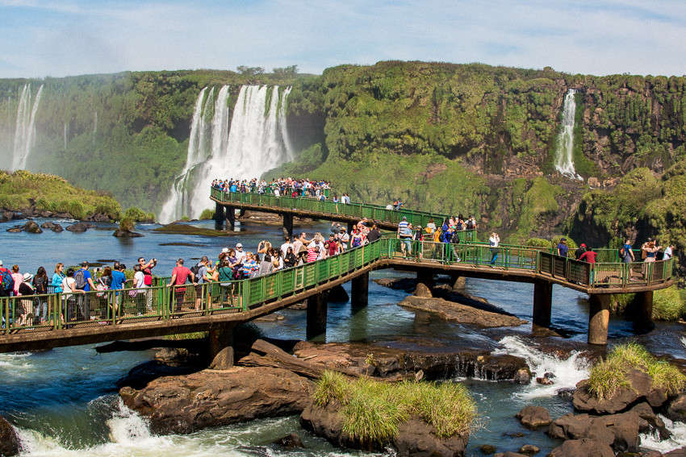
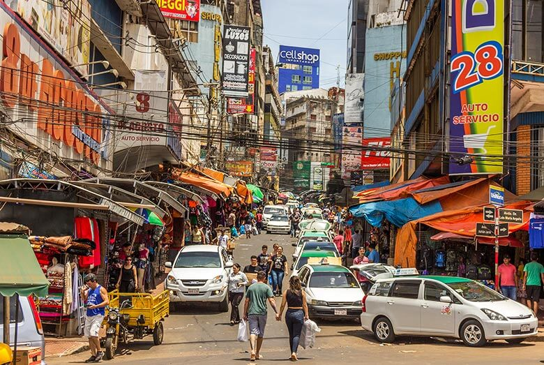

Foz do Iguaçu: Onde a Natureza Encanta
O tema deste site é Foz do Iguaçu, uma das cidades mais especiais e cheias de beleza do Paraná, conhecida no mundo inteiro principalmente pelas suas famosas Cataratas do Iguaçu. Aqui nós vamos mostrar tudo sobre esse lugar: como ele surgiu, suas paisagens impressionantes, a história do povo que vive lá, as tradições e tudo o que faz Foz do Iguaçu ser um lugar único. Neste site você vai conhecer: • 📍 O que é Foz do Iguaçu — onde fica, suas características e por que é tão importante; • 📖 Sua história — como a cidade cresceu e se desenvolveu ao longo do tempo; • 🎨 Sua cultura e tradições — como as pessoas vivem, o que comemoram e suas raízes; • 💡 Curiosidades — coisas que talvez você ainda não saiba sobre esse lugar; • 🏞️ A natureza e as cataratas — a grande maravilha natural que encanta todo mundo que visita.

A História de Foz do Iguaçu - Da Natureza ao Povo
A região era habilitada há milhares de anos pelos povos Guarani e Kaingang, que deram ao rio o nome que significa "água grande" o primeiro europeu a chegar foi o explorador Cabeza de Vaca a cidade começou a crescer com os primeiros moradores e colonos, sendo fundada oficialmente e depois recebendo o nome de Foz do iguaçu. A criação do Parque Nacional, a ligação por estrada e a construção da Usina de Itaipu foram os acontecimentos que mais transformaram o lugar, trazendo crescimento e mudanças a história de Foz do Iguaçu foi construída por muita gente diferente, os povos originais, os primeiros moradores, pessoas de outros paises e todos que ajudaram a construir a cidade.
A Importância Artística e Cultural de Foz Do Iguaçu
Foz do Iguaçu inspira artistas e representa o Paraná no mundo, a mistura de povos e a natureza grandiosa formam uma cultura rica, visível nas tradições, festas e modo de viver é reconhecida como riqueza natural e cultural do estado.

Curiosidades
Curiosidade 1
Uma curiosidade incrível é que as Cataratas do Iguaçu foram eleitas uma das 7 Maravilhas da Natureza do Mundo, e também fazem divisa entre três países ao mesmo tempo: Brasil, Paraguai e Argentina, sendo um dos poucos lugares do mundo onde você pode estar perto de três nações de uma só vez.
Curiosidade 2
A parte mais alta é impressionante das quedas se chema Garganta do Diabo, e a água despenca de cerca de 80 metros de altura o equivalente a um prédio de quase três andares! Tanta água caindo ao mesmo tempo faz um barulho enorme e sobe uma névoa que pode ser vista de bem longe.